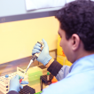
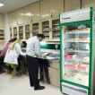
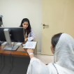

As one of the largest cancer care centres in Pakistan, Shaukat Khanum Memorial Cancer Hospital and Research Centre offers a complete range of health care services including clinical, diagnostic, out-patient, and others.
CLINICAL SERVICES
Shaukat Khanum Memorial Cancer Hospital and Research Centre offers a complete range of health care services. Find a clinical service below by searching our Departments.

DIAGNOSTIC SERVICES
Choosing a diagnostic facility is the most crucial step in the treatment planning process because only accurate and timely results lead to the right treatment decisions. At Shaukat Khanum Memorial Cancer Hospital and Research Centre (SKMCH&RC), we recognise the importance and impact our diagnostic services can have on people's lives. In line with our vision...

PHARMACY
The Department of Pharmacy provides integrated, cost-effective pharmaceutical care to both inpatients and outpatients. These patient-focused services include medication delivery, therapeutic drug monitoring, and promotion of optimal drug therapy. Our clinical Pharmacists works as an integral member of health care team to achieve desired therapeutic outcomes, prevent or minimize drug-related problems, and improve medication use...

COMPREHENSIVE HEALTH CHECKUP
Health is an area of growing concern. Minor complaints are frequently ignored but a timely diagnosis of a disease may assure you of your good health because prevention is better than cure. At Shaukat Khanum Memorial Cancer Hospital and Research Centre, we offer a comprehensive medical examination facility that provides you an opportunity to evaluate...